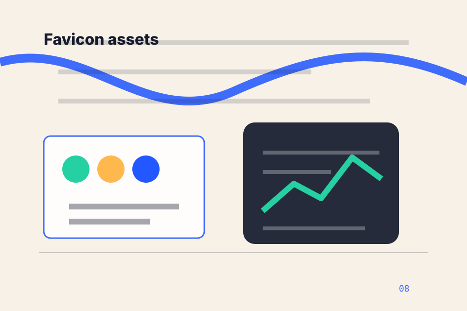
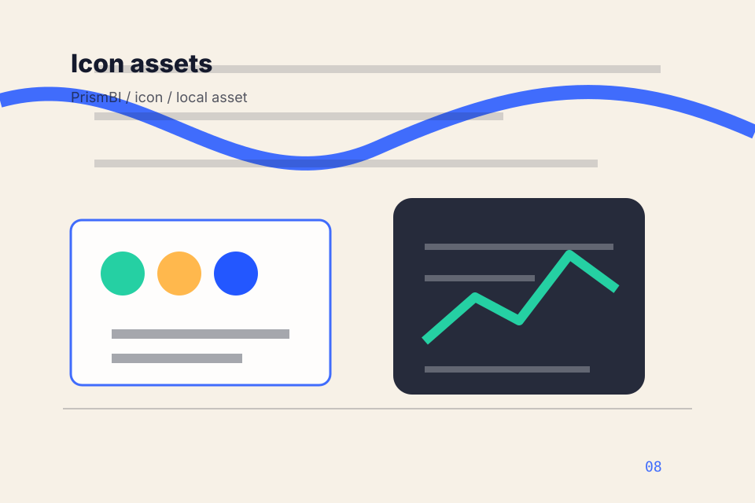
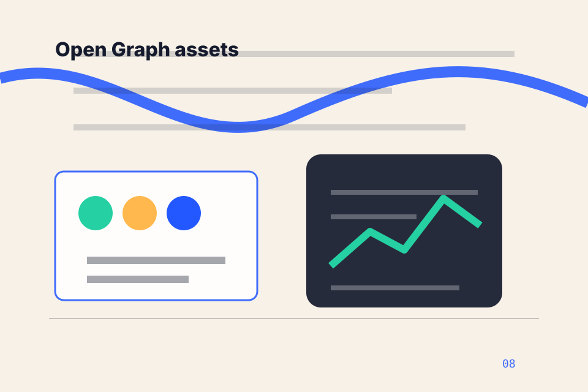
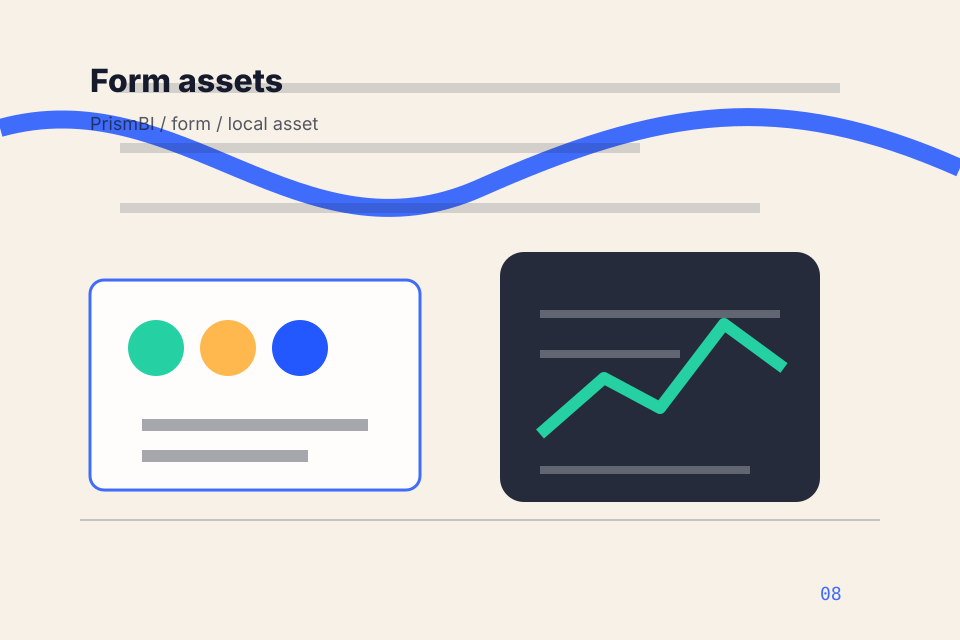
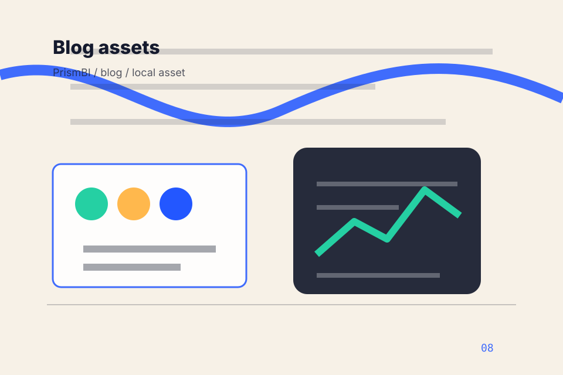
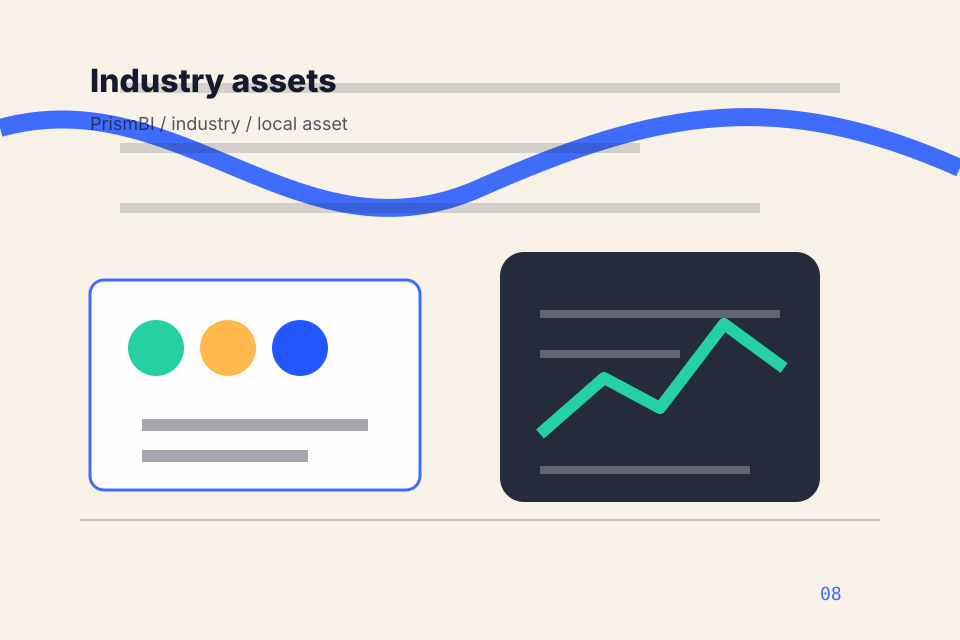
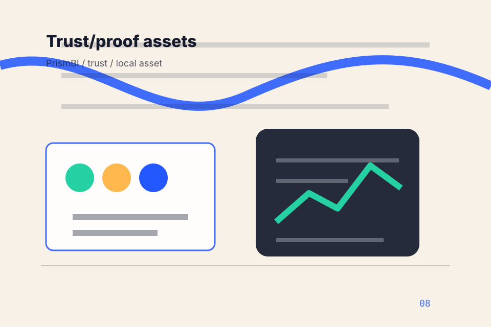

01
01Brand assets
assets/brand / Atlan direction / local to this site.
Local static asset system
Asset-System section 1 gives researching visitors a practical route into guides, checklists, and comparison material without leaving the site structure.
Asset categories
01assets/brand / Atlan direction / local to this site.
assets/brand / Atlan direction / local to this site.

03assets/brand / Atlan direction / local to this site.
 04
04assets/images/hero / Atlan direction / local to this site.
assets/video/posters / Atlan direction / local to this site.

06assets/icons/ui / Atlan direction / local to this site.
assets/illustrations/diagrams / Atlan direction / local to this site.
assets/typography / Atlan direction / local to this site.
assets/css / Atlan direction / local to this site.
assets/js / Atlan direction / local to this site.
assets/animations / Atlan direction / local to this site.
assets/seo / Atlan direction / local to this site.

13assets/og / Atlan direction / local to this site.
assets/social / Atlan direction / local to this site.
assets/header / Atlan direction / local to this site.
assets/footer / Atlan direction / local to this site.

17assets/forms / Atlan direction / local to this site.
assets/analytics / Atlan direction / local to this site.
assets/cookies / Atlan direction / local to this site.
assets/accessibility / Atlan direction / local to this site.
assets/i18n / Atlan direction / local to this site.

22assets/blog / Atlan direction / local to this site.
assets/services / Atlan direction / local to this site.

24assets/industry / Atlan direction / local to this site.
assets/case-studies / Atlan direction / local to this site.
assets/downloadables / Atlan direction / local to this site.
assets/legal / Atlan direction / local to this site.

28assets/trust / Atlan direction / local to this site.
Site routes
Documentation
{kind=link}
{kind=link}
{kind=link}
{kind=link}
{kind=link}
{kind=link}
{kind=link}
{kind=link}
{kind=link}
{kind=link}
{kind=link}
{kind=link}
{kind=link}
{kind=link}
{kind=link}
{kind=link}
{kind=link}
{kind=link}
{kind=link}
{kind=link}